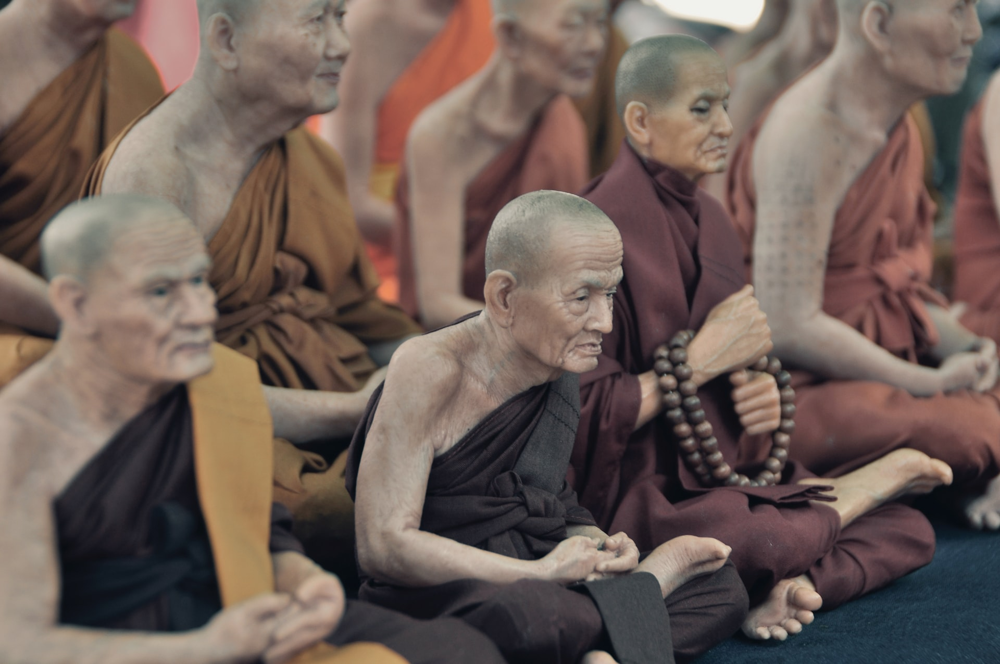

Reasons
Reasons for you to come to buddhism

Child Education
Your children are more than welcome
Spirituality
Discover yourself and connect with your true self

Best Age
There is no age for spirituality
From meditation to acupuncture, all the best that Japanese culture and Buddhism has to offer.
Meditation is a technique that allows you to lead the mind to a state of calm and relaxation through methods that involve posture and focus of attention to achieve tranquility and inner peace, bringing several benefits.
It is a practice that involves well-being at all levels: mental, physical, emotional and spiritual. This practice consists of uniting the body and mind with what is around us. The creator of yoga, Shiva, the God of creation and consciousness, instinctively generated complex movements, but of intense beauty.
Traditional Chinese medicine uses herbal medicine and other medicines as its last resort to combat health problems. According to their basic belief, the human body has a sophisticated system for locating disease and directing energy and resources to cure problems on its own.p>
Reasons for you to come to buddhism
Your children are more than welcome
Discover yourself and connect with your true self
There is no age for spirituality